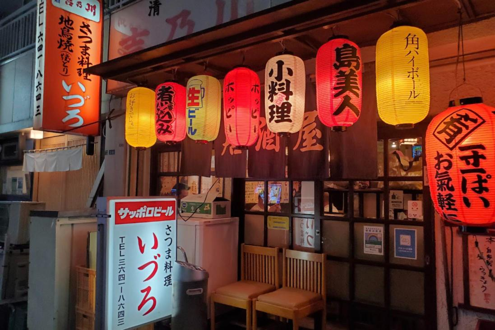
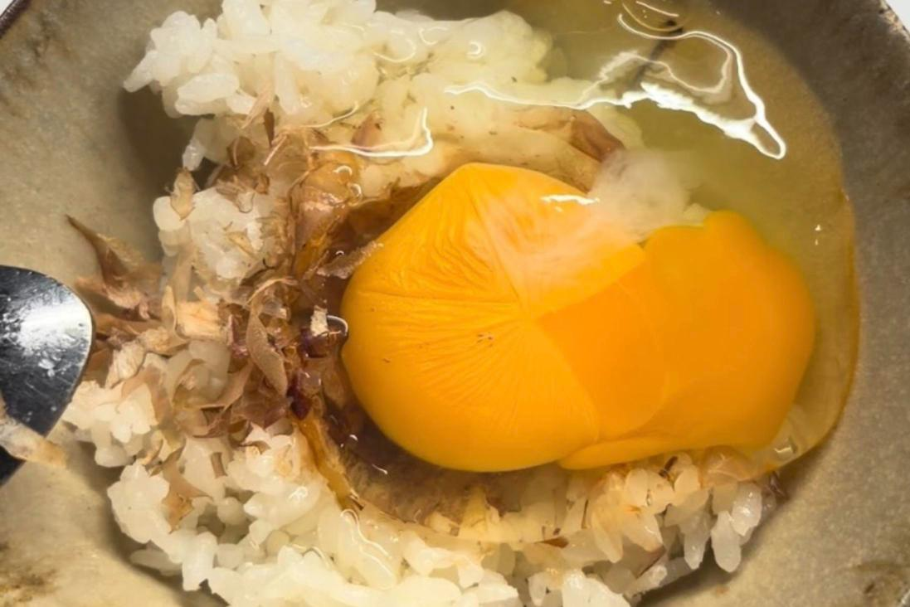
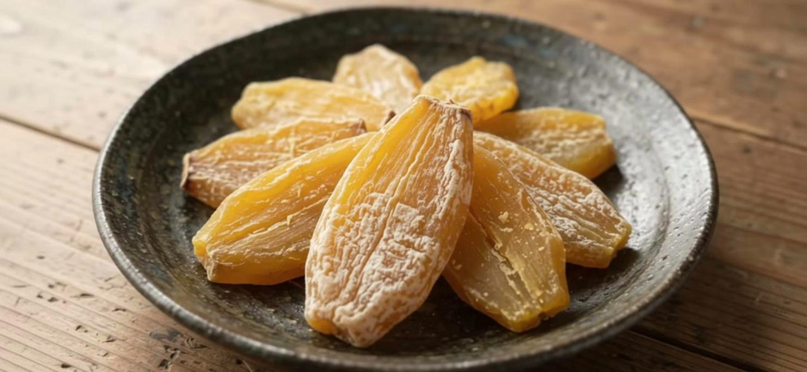

Kaho's Ibaraki Blog
Stories about Ibaraki, Japan by Kaho, a local: places, food, travel tips and real life in rural Japan.
 Oiwa Shrine: I went to Ibaraki’s most famous power spotTravel · Nov 2026 · This weekend I went to Oiwa Shrine with my friend and her daughter. Early morning, cold air, giant cedars. Now I understand why people come from all over Japan.
Oiwa Shrine: I went to Ibaraki’s most famous power spotTravel · Nov 2026 · This weekend I went to Oiwa Shrine with my friend and her daughter. Early morning, cold air, giant cedars. Now I understand why people come from all over Japan.
Otoshi: the izakaya dish you didn’t order (and why you pay for it)Food · Nov 2026 · You order a beer and a small dish appears. Then it shows up on the bill. Here is what otoshi is, and why it is not a scam.- 👘Shichi-Go-San: why tiny kimono fill Japan’s shrines in NovemberCulture · Nov 2026 · Seven, five, three. In November, Japanese families take their small kids to a shrine to say thank you for growing up healthy. Here is what it means.
- 🎁Omiyage: why Japanese people bring snacks back to the officeCulture · Nov 2026 · In Japan, a trip is not finished until you hand out a box of local sweets. Here is why, the unwritten rules, and what to buy in Ibaraki.
 Kasama Chrysanthemum Festival: Ibaraki’s flower shrineIbaraki · Nov 2026 · Kasama Inari Shrine in Ibaraki fills with about 10,000 pots of chrysanthemums every autumn. 2026 dates, what to see, and how to get there.
Kasama Chrysanthemum Festival: Ibaraki’s flower shrineIbaraki · Nov 2026 · Kasama Inari Shrine in Ibaraki fills with about 10,000 pots of chrysanthemums every autumn. 2026 dates, what to see, and how to get there.- 🍊Why Japanese houses are so cold in winterCulture · Nov 2026 · No central heating, a cold bathroom and one magic table: how Japan stays warm in winter.
 Fukuroda Falls in autumn: a giant waterfall and red leavesTravel · Nov 2026 · One of Japan's three great waterfalls, in the mountains of north Ibaraki. Early to mid November is leaf time!
Fukuroda Falls in autumn: a giant waterfall and red leavesTravel · Nov 2026 · One of Japan's three great waterfalls, in the mountains of north Ibaraki. Early to mid November is leaf time!
Raw egg on rice? Why Japan eats TKG for breakfastFood · Nov 2026 · Tamago kake gohan looks shocking to many visitors. Here is why it is normal in Japan, and how to try it safely. Nakaminato Fish Market: Ibaraki’s seafood streetFood · Nov 2026 · Cheap, fresh and lively. A simple guide to the fish market by the sea in Hitachinaka.
Nakaminato Fish Market: Ibaraki’s seafood streetFood · Nov 2026 · Cheap, fresh and lively. A simple guide to the fish market by the sea in Hitachinaka. Hitachi Aki Soba: Ibaraki’s autumn noodlesFood · Nov 2026 · November is soba season in Ibaraki. Here is why these buckwheat noodles are special.
Hitachi Aki Soba: Ibaraki’s autumn noodlesFood · Nov 2026 · November is soba season in Ibaraki. Here is why these buckwheat noodles are special. I went to see the kochia!Travel · Nov 2026 · A whole hill of fluffy red balls. Hitachi Seaside Park in autumn is something else.
I went to see the kochia!Travel · Nov 2026 · A whole hill of fluffy red balls. Hitachi Seaside Park in autumn is something else. Is Ibaraki really Japan's “least attractive” prefecture?Ibaraki · Nov 2026 · Every year a ranking puts us at (or near) the bottom. Here's why I think it's wrong.
Is Ibaraki really Japan's “least attractive” prefecture?Ibaraki · Nov 2026 · Every year a ranking puts us at (or near) the bottom. Here's why I think it's wrong.- 🌾5 things that surprise people about rural JapanLife · Oct 2026 · It's not Tokyo. No trains every 3 minutes, but neighbors give you vegetables.
- 💼Overtime in Japan: what it's really likeWork · Oct 2026 · You've heard the stories. Here's my honest view as a working person in Japan.
 Easy one-day trip to Ibaraki from TokyoTravel · Sep 2026 · No car? No problem. A simple plan with trains and buses.
Easy one-day trip to Ibaraki from TokyoTravel · Sep 2026 · No car? No problem. A simple plan with trains and buses.- 🙇♀️Unwritten rules of the Japanese countrysideLife · Sep 2026 · Nobody tells you these. But everybody knows them. A local's guide to life in rural Japan.

Hoshiimo season is here!Food · Nov 2026 · Cold wind + sunshine = Ibaraki's sweetest winter snack. What hoshiimo is, how it's made, and where to buy it.